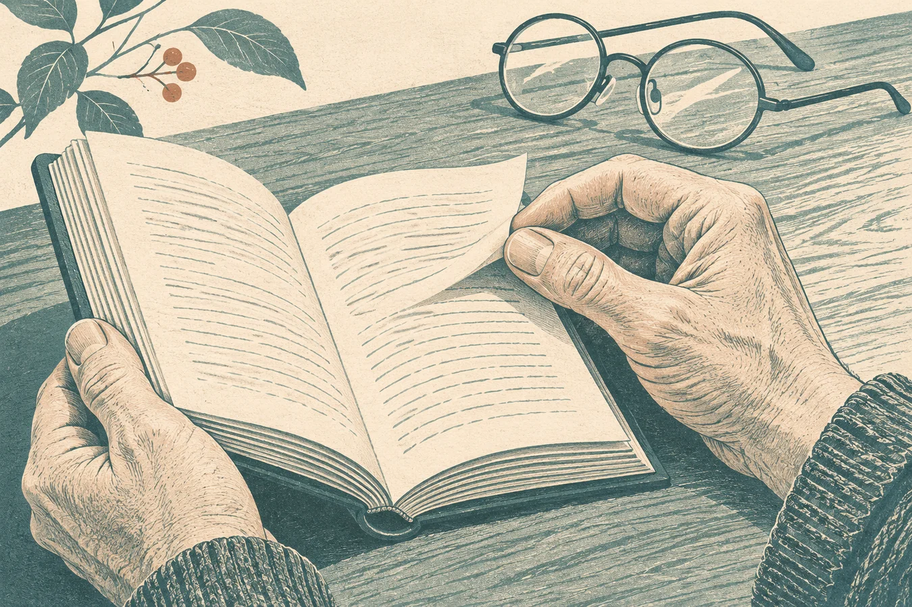

Assessing near vision in presbyopia

Motivation
When small print grows harder to read, holding a menu a little farther away can bring it back into focus. This is a familiar experience of presbyopia, the gradual loss of near focusing ability as the eye’s lens becomes less flexible with age. We wanted to make near-vision assessment available in a portable format.
Prior work
Standardized reading charts have long helped eye-care researchers study near vision. Some use sentences matched for difficulty, so a change in reading performance is easier to interpret across print sizes. This work established reading itself as a meaningful measure of how well someone sees up close.
What we delivered
At Oregon Health & Science University, I help develop a mobile research prototype for assessing near vision in people with presbyopia. It gives the team a portable format for studying changes in near vision.